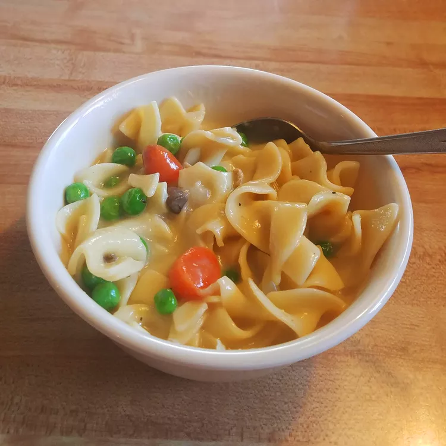

Chicken and Noodles

Description
This is a quick and easy lunch or dinner recipe for chicken and noodles soup. It should take you no more than 30 minutes to whip up from ingredients to ready for eating.
Ingredients
- 3 (14.5 ounce) cans chicken broth
- 1 (26 ounce) can condensed cream of chicken soup
- 1 (10.75 ounce) can condensed cream of mushroom soup
- 2 cups diced, cooked chicken breast meat
- 2 teaspoons onion powder
- 1 teaspoon seasoning salt
- 1/2 teaspoon garlic powder
- 2 (9 ounce) packages frozen egg noodles